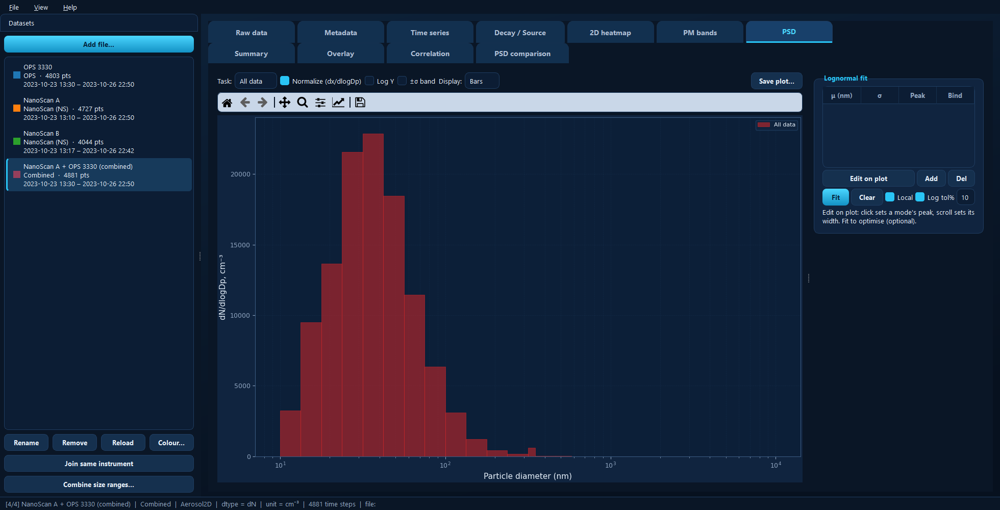

Desktop GUI¶
aerosoltools ships with a desktop application for loading instrument files,
marking what happened when, and exploring the result — no coding required.
Everything the GUI does is built on the same library the
example notebooks use, so anything you work out
point-and-click can later be scripted, and vice versa.

The main window: datasets sidebar on the left, two rows of tabs, and the status bar describing the active dataset.¶
Installing and starting¶
The GUI needs PyQt5, which is an optional extra so that the library itself stays dependency-light:
pip install aerosoltools[gui]
On Windows, make yourself a shortcut. Run this once:
aerosoltools-gui-shortcut
It puts an AerosolTools icon on your Desktop and in the Start Menu. After that you never need a terminal — double-click the icon, or press the Windows key and type AerosolTools. Re-running the command just refreshes the shortcuts.
Otherwise, start it from a terminal or from Python:
aerosoltools-gui # empty viewer
aerosoltools-gui data/sample_ELPI.txt # open a file straight away
python -m aerosoltools.gui # same thing, via the module
from aerosoltools.gui import launch
launch() # empty viewer
launch("data/sample.txt") # or pre-load a file
The window¶
Four regions, and it is worth knowing which is which before reading the tab pages:
The datasets sidebar (left). Every file you import becomes a dataset here. The highlighted one is the active dataset — the top row of tabs always shows that one. Each entry lists its name, instrument, number of points and time span, with a coloured square: that colour follows the dataset through every plot in the app, and you can change it with Colour….
The tabs (centre), in two rows. The split is the single most useful thing to know about the app:
The top row shows the active dataset on its own — its table, its metadata, its time series, its size distribution.
The bottom row works across the whole project — comparing, correlating and summarising several datasets at once.
Which tabs appear in the top row depends on what kind of data is active. Size- resolved instruments get 2D heatmap, PM bands and PSD; a correlated APS also gets Aero ↔ Optical. Single-channel instruments get neither. Each tab page below states its own requirement.
The menu bar (top). File handles projects and importing; View switches between the dark and light themes and hides the sidebar; Help lists the keyboard shortcuts (F1) and shows the About box.
The status bar (bottom). Describes the active dataset: its position in the project, instrument, data class, current distribution basis, unit, number of time steps, and the file it came from. When something looks wrong, read this line first.
Getting data in¶
Any of these work:
Add file… in the sidebar, or File → Import data… (Ctrl+O). You can select several files at once.
Drag and drop files onto the window.
The instrument is normally detected from the file itself; if that fails you are asked to pick the loader from a list. One file usually becomes one dataset, though a file containing several measurement channels (a Ranger, say) becomes one dataset per channel.
Once loaded, the sidebar buttons cover the rest:
Button |
What it does |
|---|---|
Rename |
Change the dataset’s display name — it labels every plot legend. |
Remove |
Take the dataset out of the project. |
Reload |
Re-read the source file. This is your undo for resampling, smoothing and time shifts. |
Colour… |
Set the dataset’s plot colour across the whole app. |
Join same instrument |
Concatenate several recordings from one instrument into one continuous record. |
Combine size ranges… |
Stitch two instruments covering different size ranges into one distribution. |
Joining consecutive files¶
Instruments often split a long measurement across several files. Select one of them, click Join same instrument, and pick the files that belong together — the dialog suggests the ones sharing a serial number but lets you override it. The result replaces the originals with one continuous record.
Combining two size ranges¶
A NanoScan measures roughly 10–350 nm; an OPS starts around 300 nm and runs to 10 µm. Combine size ranges… stitches the two into a single distribution at a crossover diameter you choose, giving one dataset spanning both.
{kind=link}

A NanoScan and an OPS combined at a 350 nm crossover: one distribution from about 11 nm to 9 µm, wider than either instrument measures alone.¶
The originals stay in the project — the combined dataset is added alongside them.
Activities¶
An activity (or task) is a named time period: Sanding, Cleaning, Background. Marking them is what turns a concentration trace into an exposure assessment, because the Summary and PSD panes can then report per activity.
Two things make activities behave the way you would hope:
They are stored in absolute time and belong to the project, not to one dataset. Mark a period once and every instrument that was running then can report on it.
A new activity starts on the active dataset only. Use Applies to… on the Time series tab to share it with the others, either with all datasets or with a chosen subset.
You mark them by dragging on the plot in the Time series tab, which is where all of this is described in detail.
Saving your work¶
File → Save project (Ctrl+S) writes the whole project — datasets, activities, colours, fits and settings — into a folder, together with copies of the raw files. The folder is self-contained and can be moved or sent to someone else; File → Open project (Ctrl+Shift+O) reads it back, restoring the theme it was saved with.
Save the project when you want to continue later. Use the export buttons described next when you want results out of the app.
Getting results out¶
Every plot pane has a Save plot… button, and the table panes have an
Export to Excel… or Export table… button that writes .xlsx or .csv.
One thing to know about plot exports: they save the figure as you see it, so zoom and axis limits carry over — but recoloured onto a light background with larger text and thicker lines, ready for a report or a paper. The figure on screen is never modified. Because the export follows the live figure, a black-on-white publication figure is easiest to get by switching to the light theme first (View → Theme → Light).
Keyboard shortcuts¶
Press F1 in the app for the current list. The main ones:
Shortcut |
Action |
|---|---|
Ctrl+O |
Import data files |
Ctrl+S / Ctrl+Shift+S |
Save project / Save project as |
Ctrl+N / Ctrl+Shift+O |
New project / Open project |
Ctrl+D |
Show or hide the datasets sidebar |
F1 |
Keyboard shortcuts |
The tabs¶
Each tab has its own page below, describing what it is for and what every control does.
The active dataset
Across datasets